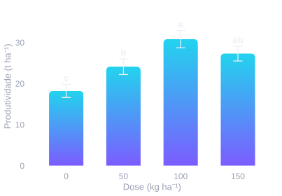

Ranova: análise de variância sem programar
ANOVA, pressupostos, teste de médias, desdobramento da interação, gráficos e relatório para experimentos em DIC e DBC, do experimento simples às parcelas subsubdivididas.
O que o Ranova analisa
O app cobre os arranjos mais comuns nas ciências agrárias, sempre em DIC (inteiramente casualizado) ou DBC (blocos casualizados), com uma ou várias variáveis resposta de uma vez:
| Situação no campo | Nome do arranjo |
|---|---|
| 1 fator | Experimento simples |
| 2 ou 3 fatores sorteados juntos nas parcelas | Esquema fatorial |
| 1 fator nas parcelas e 1 nas subparcelas | Parcelas subdivididas |
| 2 fatores combinados nas parcelas (ou nas subparcelas) e 1 no outro nível | Parcelas subdivididas com esquema fatorial nas parcelas (ou nas subparcelas) |
| 1 fator em cada nível: parcela, subparcela e subsubparcela | Parcelas subsubdivididas |
Escolher o arranjo errado não dá erro na tela: dá uma ANOVA com o resíduo errado. Nas parcelas subdivididas, por exemplo, o fator da parcela é testado contra o erro (a), e o da subparcela contra o erro (b). O Ranova usa o erro correto em cada teste F e em cada comparação de médias, inclusive o erro combinado (com graus de liberdade de Satterthwaite) quando se compara o fator da parcela dentro de cada nível da subparcela.
Como os dados devem estar
Uma linha por parcela e uma coluna para cada informação:
| Bloco | Dose | Cultivar | Produtividade | Brix |
|---|---|---|---|---|
| 1 | 0 | A | 28,4 | 10,2 |
| 1 | 50 | A | 31,9 | 10,9 |
| … | ||||
Se a sua planilha está em "formato largo" (um bloco por coluna, uma aba por data), reorganize antes. O guia Como organizar a planilha antes de analisar mostra o passo a passo, e Parcelas perdidas e dados faltantes explica o que fazer com parcelas perdidas.
Passo a passo no app
- Dados. Escolha uma das quatro entradas:
Montar (informe de 1 a 3 fatores com seus níveis separados por
;, as repetições ou blocos e as variáveis; o app gera a planilha com todas as combinações para você digitar), Importar (Excel.xlsx/.xlscom escolha da aba, ou CSV; há uma planilha modelo para baixar), Colar (células copiadas do Excel, com ou sem cabeçalho) ou Exemplo (dados fictícios de melão: fatorial 4 × 2 de doses × cultivares em DBC, ou parcelas subdivididas com irrigação nas parcelas e cultivar nas subparcelas). - Estrutura do experimento. Escolha o delineamento, a coluna de blocos (ou de repetição), os fatores e as variáveis resposta. O app já sugere tudo pelas colunas; confira.
- Opções da análise. Nível de significância, casas decimais, formato da tabela de ANOVA (QM com asteriscos, F e p em colunas, ou F (p) na mesma célula), teste de médias e erro-padrão das médias (do modelo ou descritivo).
- Analisar. Os resultados aparecem em abas, explicadas abaixo.
- Painel e relatório. Monte um painel com os gráficos que quiser (A, B, C…) e baixe o relatório em PDF (A4, para imprimir) ou HTML (com o visual do app, para abrir no navegador ou enviar).
Como ler cada aba de resultado
ANOVA
O quadro traz fontes de variação, GL, quadrados médios, F, p e o CV (um por erro, nas subdivididas), com uma leitura rápida em texto de quais efeitos e interações foram significativos. Se algum termo do quadro não for claro, veja Como ler a tabela da ANOVA, Graus de liberdade e CV alto é problema?
Pressupostos
Shapiro-Wilk (normalidade dos resíduos), Levene (homogeneidade de variâncias) e os quatro gráficos de diagnóstico dos resíduos. Os gráficos costumam dizer mais que os p-valores; o guia Pressupostos da ANOVA sem mistério mostra o que procurar.
Discrepantes
O app marca como possível outlier a parcela com resíduo studentizado |t| > 3, e como ponto influente a que tem distância de Cook acima de 4/(n − p) e |t| > 2. Você pode substituir o valor pela média das demais repetições do tratamento e reanalisar; a substituição fica registrada no relatório e pode ser desfeita.
Médias e interação
Médias com letras pelo teste escolhido: Tukey, t (LSD), Bonferroni, Duncan, SNK, Scott-Knott ou Dunnett. Quando a interação é significativa, a aba Interação faz o desdobramento: letras maiúsculas comparam numa direção e minúsculas na outra. O guia Interação significativa: e agora? explica como ler essa tabela, e Tukey ou regressão? explica por que doses pedem regressão, e não teste de médias.

Gráficos
Médias (uma cor ou uma cor por nível) e interação (linhas ou barras com letras), com paletas prontas, inclusive tons de cinza. Dá para renomear variáveis, fatores e até níveis (por exemplo, "0" vira "Controle"), trocar fonte e tamanho, e exportar em PNG ou TIFF a 150, 300 ou 600 dpi, com tamanho em centímetros. Para ajustes mais finos de aparência, leve as médias e as letras para o Plota.
Toda tabela tem um botão Copiar tabela, que cola como tabela no Word e como células no Excel, sem a formatação do app. Há ainda a opção de estilo "clássico (artigo)", com texto e filetes pretos.
Dúvidas comuns
Os resultados conferem com outros programas?
As análises vêm do pacote R ranova, que tem testes automatizados com valores de referência
dos pacotes agricolae (Tukey, t, Bonferroni, Duncan, SNK e parcelas subsubdivididas),
ExpDes.pt (Scott-Knott e parcelas subdivididas, inclusive o erro combinado) e do
aov(... + Error()) do R base.
Prefiro rodar no R. Dá?
Sim, o mesmo motor está no pacote, de código aberto:
remotes::install_github("Marlenildo/ranova")
library(ranova)
ajuste <- ranova_ajuste(dados, "prod", c("dose", "cultivar"), "DBC", bloco = "bloco")
ranova_anova(ajuste) # quadro da ANOVA com CV
ranova_medias(ajuste, "cultivar", teste = "tukey") # médias com letras
ranova_medias(ajuste, "dose", dentro = "cultivar") # desdobramentoA documentação está no repositório Marlenildo/ranova. Para dar os primeiros passos, veja R para pesquisa.
Meus dados ficam guardados?
Não. A planilha fica só na sessão aberta do navegador e é descartada ao fechar a página. Antes de sair,
baixe o relatório e, se quiser, a planilha em .xlsx.
E se o meu delineamento não estiver na lista?
Quadrado latino, medidas repetidas no tempo, covariáveis, contagens e proporções que pedem modelos generalizados ficam fora do app. Para esses casos, entre em contato.